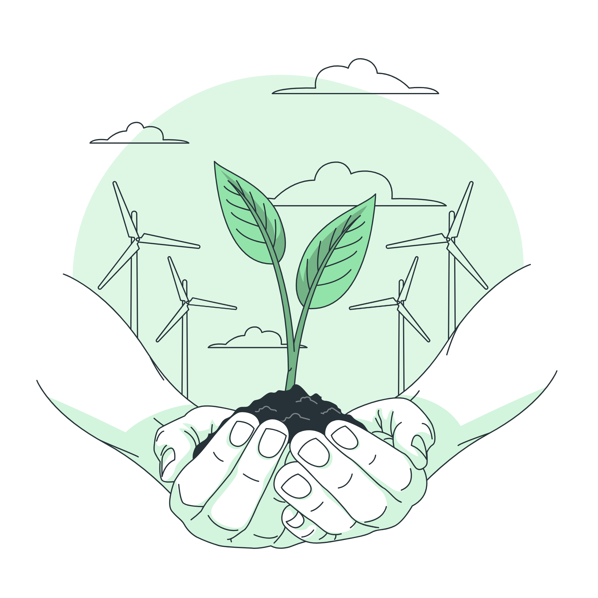
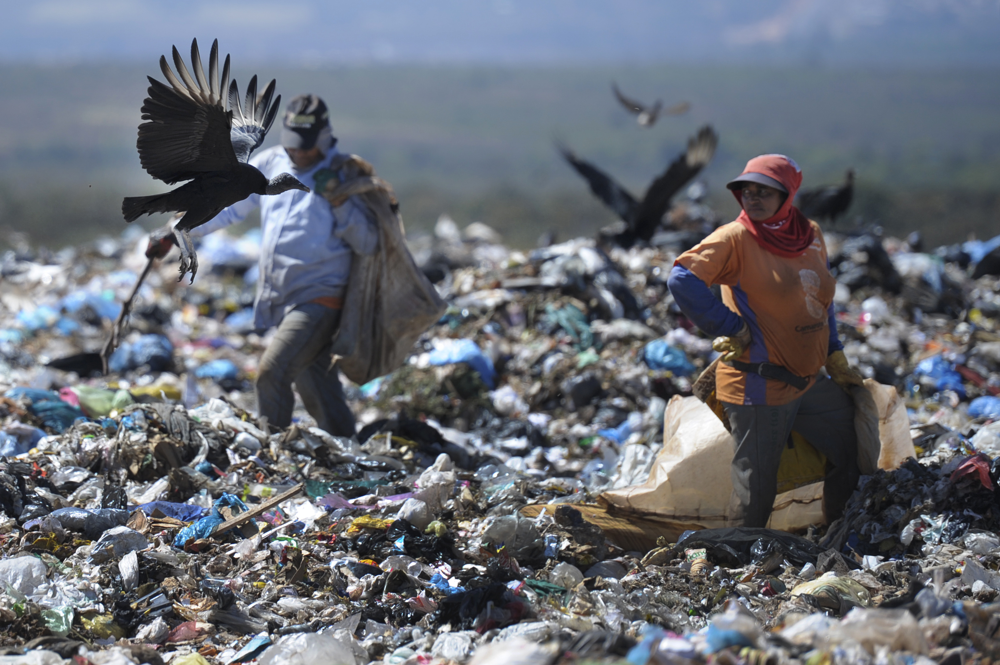
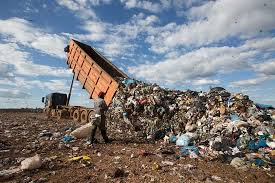
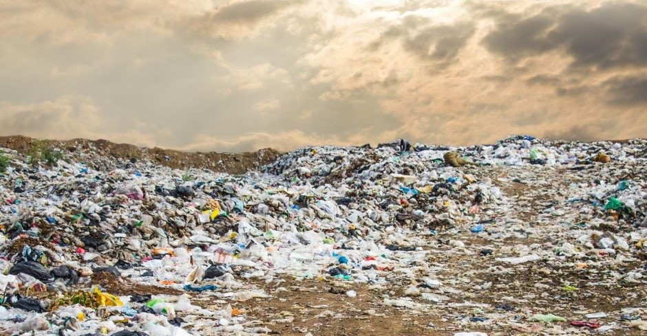
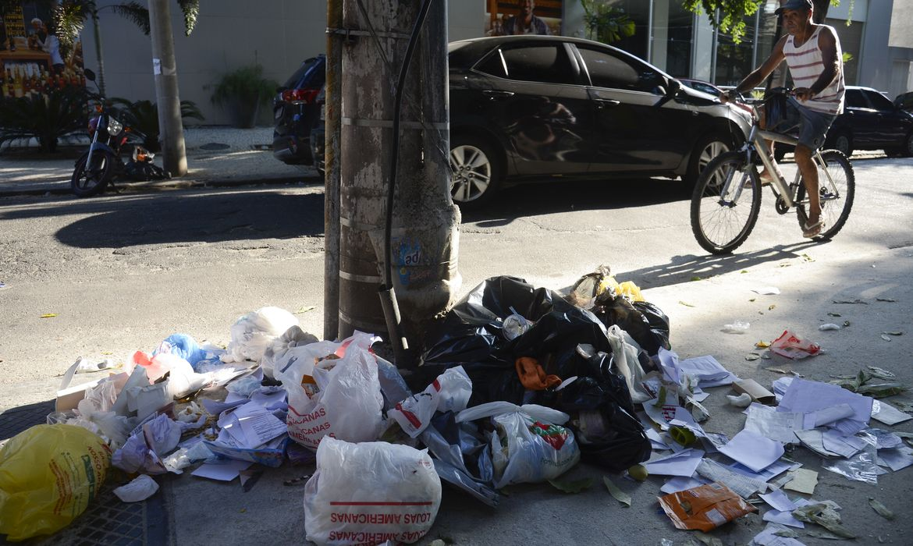
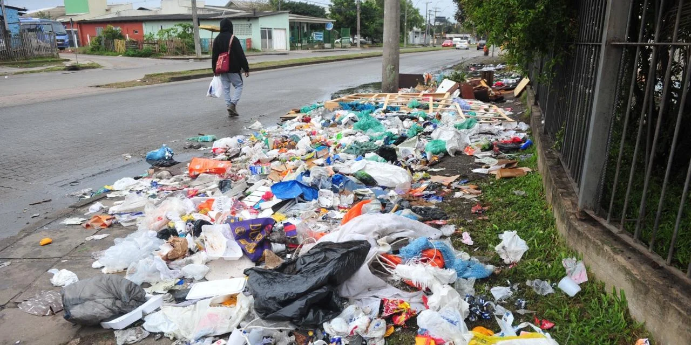
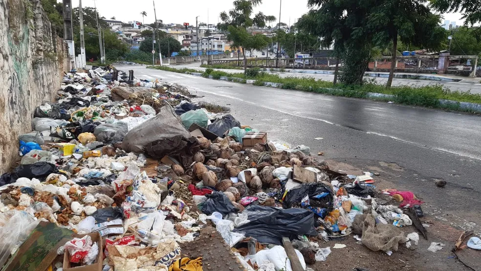

Somos uma equipe de pesquisadores qualificados focados no desenvolvimento de projetos envolventes a sustentabilidade ambiental e na resolução de problemas contenporaneos. Através de nossas pesquisas, conseguimos construir soluções baseadas na ciência e na tecnologia, sempre se aperfeiçoando através do conhecimento. Nossa equipe acima de tudo valoriza o avanço sustentável e a qualidade de vida, além de priorizarmos a inovação e avanço regulado aos recursos disponíveis a nós. Agora por que não continua navegando e conheça mais sobre o nosso trabalho e nossas pesquisas?

O Problema:
UM dos temas mais abordados dentro da ecologia é com certeza o aquecimento global, proviniente do efeito estufa, que afeta a qualidade de vida dos seres vivos e o cenário socioeconomico mundial. Existem diversos fatores que contribuem para esse fenomeno, como a emissão de gáses do efeito estufa, essas emissoes acontecem no desmatamento, no funcionamento das atividades industriais, na criação de gado, no funcionamento de veículos movidos a gasolina, no descarte incorreto de lixo e etc. Ao pesquisarmos delicadamente fatores contribuentes e ações a serem tomadas, percebemos uma certa dificuldade ao lidar com o descarte do lixo, que hoje são basicamente jogados em aterros, os conhecidos lixões. Isso pode ser muito preojudicial para o meio ambiente, não só pela acidificação dos solos, mas também pela liberação de gáses que afetam o efito estufa.






Atualmente, enfrentamos uma grande crise relacionada à conscientização ambiental. Poucas famílias adotam um consumo responsável ou realizam ações que poderiam auxiliar na resolução de muitos dos conflitos ambientais, como a reciclagem.
Além disso, a produção desenfreada das indústrias e o desperdício de alimentos provenientes de restaurantes, comércios ou até mesmo residências
são fatores que contribuem diretamente para a poluição atmosférica e o agravamento do aquecimento global.
Outro ponto preocupante é o descarte incorreto de resíduos, sejam eles tóxicos, orgânicos, empresariais ou industriais, que ocorre em larga escala por todo o Brasil.